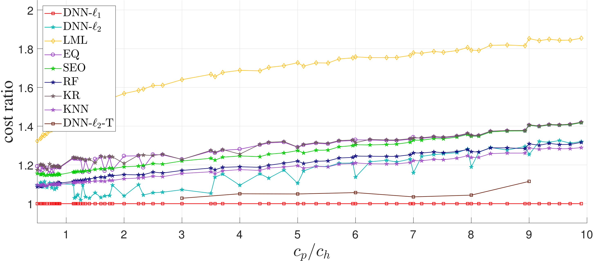

Newsvendor Problem
The newsvendor problem optimizes the inventory of a perishable good. Perishable goods are those that have a limited selling season; they include fresh produce, newspapers, airline tickets, and fashion goods. The newsvendor problem assumes that the company purchases the goods at the beginning of a time period and sells them during the period. At the end of the period, unsold goods must be discarded, incurring a holding cost. In addition, if it runs out of the goods in the middle of the period, it incurs a shortage cost, losing potential profit. Therefore, the company wants to choose the order quantity that minimizes the expected sum of the two costs described above. The problem dates back to 1888. See Porteus (2008) for a history.
The optimal order quantity for the newsvendor problem can be obtained by solving the following optimization problem: where \(d\) is the random demand, \(y\) is the order quantity, \(c_p\) and \(c_h\) are the per-unit shortage and holding costs (respectively). In the presence of the demand distribution, the optimal order quantity can be obtained by solving the optimization problem (Snyder and Shen 2018). In the classical version of the problem, the demand distribution (e.g., normal) and its parameters are either known or estimated using available data.
There are numerous extensions of this problem (see ???). One of the extension is multi-dimensional features newsvendor problem, in which the demand from each of the n items comes with some additional information, e.g. weather conditions, day of the week, store location, etc.
There are four main approaches for solving the multi-feature newsvendor problem with data features. First, the classical approach obtains an estimate of the demand's probability distribution and then uses the classical optimization model to obtain the order quantities. This approach is called separated estimation and optimization (SEO). However, obtaining the probability distribution with any approximation procedure involves some level of errors, especially when there are insufficient historical data. In addition, sometimes there is not enough data to approximate a probability distribution. So, in each of these cases, the classical approach cannot be used.
Second, Bertsimas & Thiele (2005) proposes a data driven algorithm that directly optimizes the order quantities through finding Estimated Quantile (EQ). However, this model fails when there is volatility among the training data. In addition, similar to the classical newsvendor algorithm, it only considers categorical features and cannot deal with continuous features, which are common in supply chain demand data.
Third, an approach for solving multi-feature newsvendor problem can be derived from the machine learning-based algorithms proposed by Bertsimas & Kallus (2014) to solve general optimization problem: in which \(\left\{(x^1, y^1), \dots, (x^N, y^N)\right\}\) are the historical data such that \(x^i\) is a \(d\)-dimensional feature vector and \(y^i\) is the target value, e.g., demand, and \(z\) is the decision variable. They propose using several machine learning algorithms to optimize the mentioned problem. We chosen the best of them, namely: k-nearest neighbor (KNN), kernel method, and random forest (RF). Also, a sample average approximation (SAA) algorithm is used for the baseline, and the substitute weights for the SAA method of each algorithm is derived by those algorithms.
Fourth, machine learning and Deep Neural Network (DNN) models have been proposed to obtain a forecast of the demand, e.g. Lu & Chang (2014). Most of these approaches set order quantities equal to the demand forecast. However, this ignores a core insight from the newsvendor model, namely, that order quantities should be larger (or, in rarer cases, smaller) than the demand forecast, with the actual quantity driven by the relative magnitudes of the shortage and holding costs. To address this drawback, Ban & Rudin (2017) proposes a Linear Machine Learning (LML) model, which considers the cost coefficients to obtain order quantities. However, this model is slow for a large number of instances, has poor quality when there are small number of observations for each combination of the features, and its learning is limited to the current training data. Therefore, there is a need for an algorithm that works with both small and large amounts of featured-historical data and solve them in a reasonable amount of time.
Our Approach
We develop a new approach based on Deep Neural Network (DNN) to solve the multi-product newsvendor problem with data features. DNN is a branch of machine learning which aimed to build a model between inputs and outputs. In order to minimize the closeness of the obtained values and the real outputs, a loss function, e.g. hinge, euclidean, etc. measures the closeness of them. The goal of DNN is providing a small loss value. To adapt DNN for the newsvendor problem, we propose two loss functions, considering the impact of the shortage and holding costs. These loss functions allow DNN to obtain the minimizer of the newsvendor cost function directly, rather than first estimating the demand distribution and then choosing an order quantity. Thus, feeding the historical data into the corresponding DNN and running it gives the order quantities directly. Two proposed loss functions are based on the newsvendor cost function and we call them DNN-\(\ell_1\) and DNN-\(\ell_2\), according to their structures.
Numerical Experiments
In order to check the efficiency and validity of our algorithm, in addition to implementing our DNN's (DNN-\(\ell_1\) and DNN-\(\ell_2\)), EQ, LML, SEO, KNN, RF, and KR algorithms are implemented, order quantities was obtained with each algorithm and the corresponding newsvendor cost functions were compared. All eight algorithms are tested on a real-world and multiple simulated datasets. The real-world dataset is a retailer's basket dataset, including 13K records for the demand of 24 different departments in each day and month, of which 75% is considered for training and 25% for testing. The results of each algorithm for 100 values of \(c_p\) and \(c_h\) are shown in the following figure, in which the vertical axis shows normalized costs, i.e., the cost value of each algorithm divided by the corresponding DNN-\(\ell_1\) cost. The horizontal axis shows the ratio \(c_p/c_h\) for each instance. Moreover, in order to determine the conditions under which DNN outperforms the other algorithms on larger/smaller instances, several datasets were generated randomly and the results of the four algorithms were compared. We found that in the presence of sufficient historical data, our approach can solve problems with known probability distributions as accurately as SEO and EQ solve them. However, the real value of our approach is that it is effective for problems with small quantities of historical data, problems with unknown/unfitted probability distributions, or problems with volatile historical data---all cases for which the current approaches fail.
Conclusion
These results are really incredible!!!. We can learn to play close to optimal solution, with just---and only just---some historical data. Without any knowledge how other agents play, what is their ordering policy, etc. Nowadays that any company has huge datasets, we can easily use those data and optimize their supply chain network. This approach can be easily used in different supply chain with much more complex networks, and more agents. I will post more results latter. BTW, you also can read the corresponding paper here .!
Porteus, Evan L. "The newsvendor problem." Building Intuition. Springer, Boston, MA, 2008. 115-134.
Snyder, Lawrence V., and Zuo-Jun Max Shen. Fundamentals of supply chain theory. John Wiley & Sons, 2011.
Bertsimas, Dimitris, and Aurélie Thiele. "A data-driven approach to newsvendor problems." Working Paper, Massachusetts Institute of Technology (2005).
Ban, Gah‐Yi, and Cynthia Rudin. "The big data newsvendor: Practical insights from machine learning." (2017).
Bertsimas, Dimitris, and Nathan Kallus. "From predictive to prescriptive analytics." arXiv preprint arXiv:1402.5481 (2014).
Lu, Chi-Jie, and Chi-Chang Chang. "A hybrid sales forecasting scheme by combining independent component analysis with K-means clustering and support vector regression." The Scientific World Journal 2014 (2014).